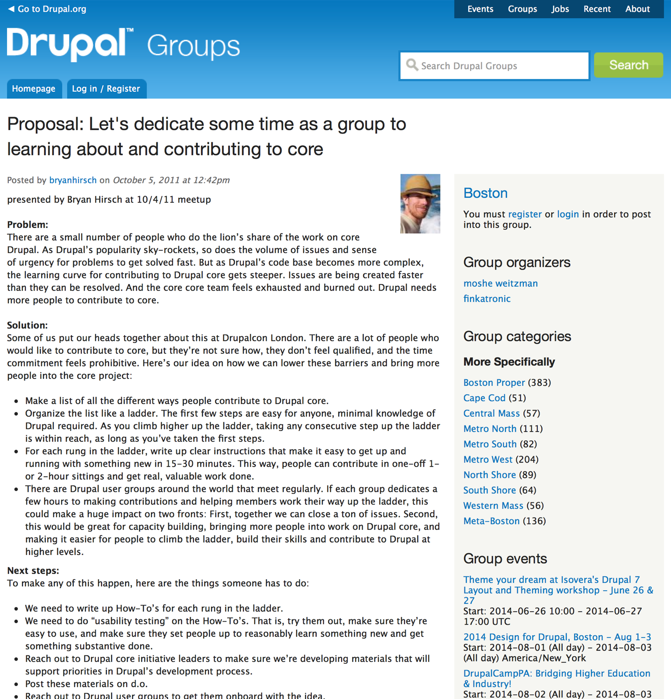
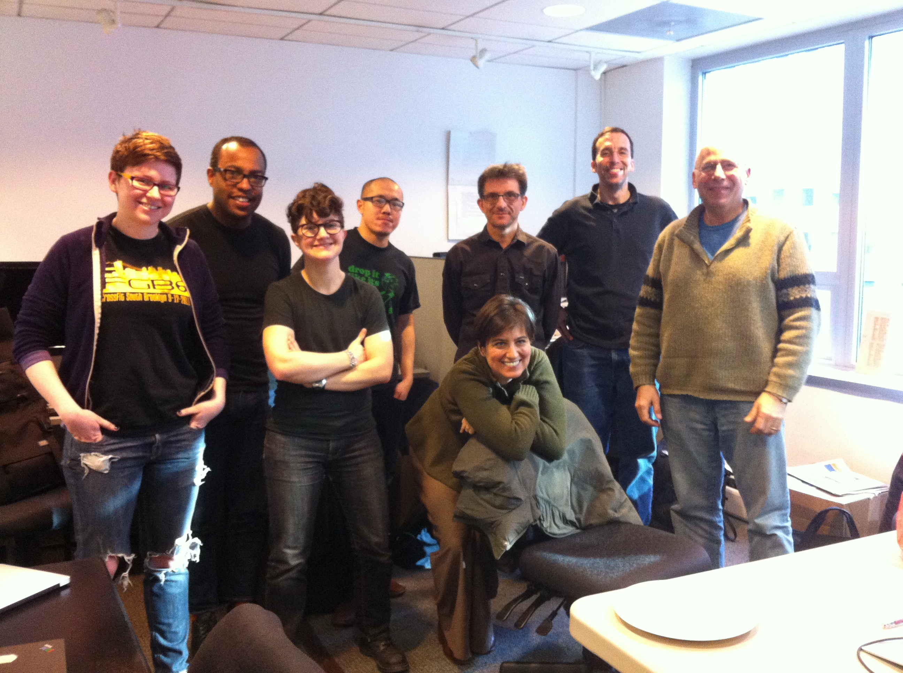
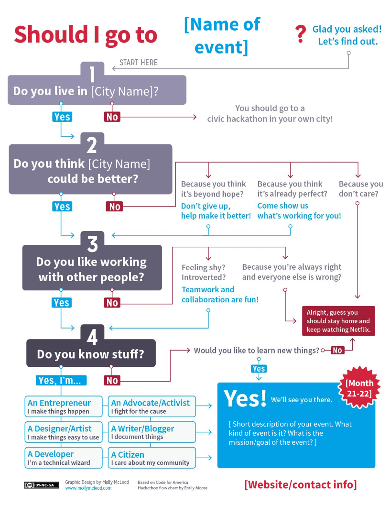

Get more contributors!
Lessons from the Drupal Ladder
Hi, I'm Fureigh.
(Obligatory introductory slide)

Ceci n'est pas une Drupal talk
- Get more people involved in your project
- Increase the diversity of the group of people doing (and getting credit for) higher-status tasks
TL;DL:
Offering a structured approach for step-by-step skill-building can combat imposter syndrome and build community, thereby increasing the number and diversity of your project’s contributors.
The problem
With great popularity comes great responsibility.
http://www.codem0nk3y.com/2012/04/what-bugs-me-about-modx-and-why/cms-learning-curve/
“There are a small number of people who do the lion’s share of the work on core Drupal. As Drupal’s popularity sky-rockets, so does the volume of issues and sense of urgency for problems to get solved fast. But as Drupal’s code base becomes more complex, the learning curve for contributing to Drupal core gets steeper. Issues are being created faster than they can be resolved. And the core core team feels exhausted and burned out. Drupal needs more people to contribute to core.”
Enter the Drupal Ladder
or “The Boston Initiative”
(Thanks, @bryanhirsch!)
Initial proposal
Key components
- A list of all the ways people contribute to Drupal core
- Organizing that list into steps
- A writeup of clear instructions for each step; make it easy to get up and running in 15 to 30 minutes
- Explicit engagement of existing community infrastructure (Drupal user groups!)
To recap:
- A series of HOWTOs people can use by themselves
- Leverage existing community groups to 1) get work done and 2) build capacity
Which brings us to New York
or, "So I started a Meetup"
Which brings us to New York
or, "So I started a Meetup"
HOWTO:
- Environmental scan (see what's already being done)
- Organize the thing; start somewhere
- Recruit, recruit, recruit
Know your motivation
“Is your New Year’s resolution to learn more about Drupal 8? How about to give back to the Drupal community?”
Outreach is crucial
“If you build it, they will come” is a flawed design pattern.
Tactics
- One-on-one outreach to get around the bystander effect and imposter syndrome (but don't be creepy)
- Promote through existing community channels
Tips
- Assume the person reading it is new. Be welcoming and avoid jargon.
- Be responsive. Be the nicest guy in the room.
- Do your best to make it a positive experience for everyone.
Challenges
Trauma around school/structured learning
Imposter syndrome
and baggage around non-code contributions
In the words of the Geek Feminism Wiki:
“Impostor syndrome describes a situation where someone feels like an impostor or fraud because they think that their accomplishments are nowhere near as good as those of the people around them.
Usually, their accomplishments are just as good, and the person is applying an unfairly high standard to themself (and not to others).
It's especially common in fields where people's work is constantly under review by talented peers, such as academia or Open Source Software.”
Explicit invitations

All learning, no less tangible contribution
Get in the water
Start building capacity right away
Institutional memory
Document and communicate
- Sign-in sheet
- Take pictures (with consent) and post write-ups
Outcomes for participants
- Everyone made their first contributions to Drupal itself.
- Increased skills
- Some participants landed their first professional Drupal jobs
- Network of Drupal friends
- Confidence --> more contributions
- Status that comes with contributing
Outcomes for local community
Outcomes for Drupal project
Benefits of a step-by-step process:
- Clear path to success for participants
- ...and for event organizers
- Shared language and shared experiences can help build community
- People can work on their own time
Benefits of the community element:
- You don't have to reinvent the outreach wheel
- Accountability and motivation to keep going
- More experienced people can help newer people
- Tricks of the trade; we learn more from each other in person than the curriculum covers
- Community members get to see what it’s like to work with/around each other
- Networking --> economic empowerment
- Model and learn good practices
- Fun! (gasp)
Benefits to the project itself:
- The work itself: patches submitted, reviewed, issues cleaned up, etc.
- More contributors with more skills
- More people interested in and getting a chance to mentor and teach each other
- Increased capacity in general!
- —> decreased risk of burnout overall.
Increase your contributor pool
- A structured approach for step-by-step skill-building can be a secret weapon for 1) getting more people involved and 2) increasing the diversity of the group of people doing (and getting credit for) higher-status tasks.
- A community element can be helpful for continued motivation, encouragement, learning and networking.